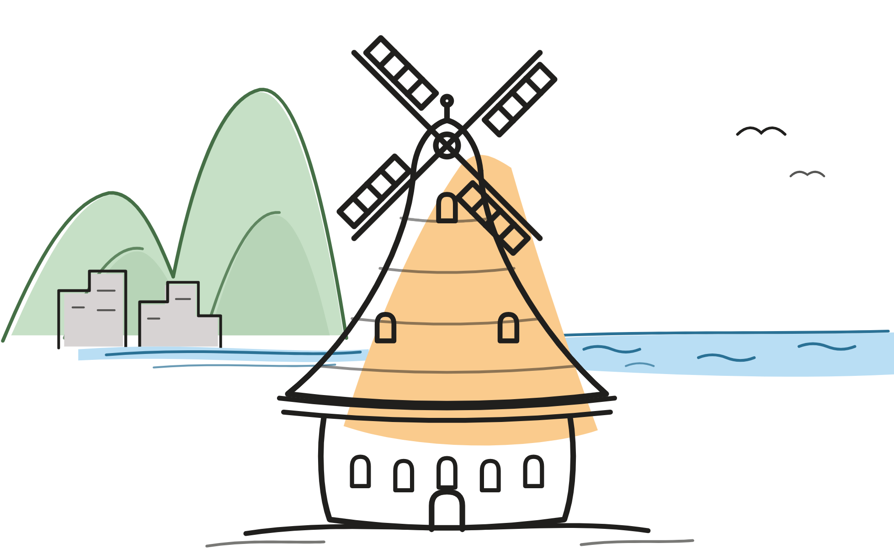
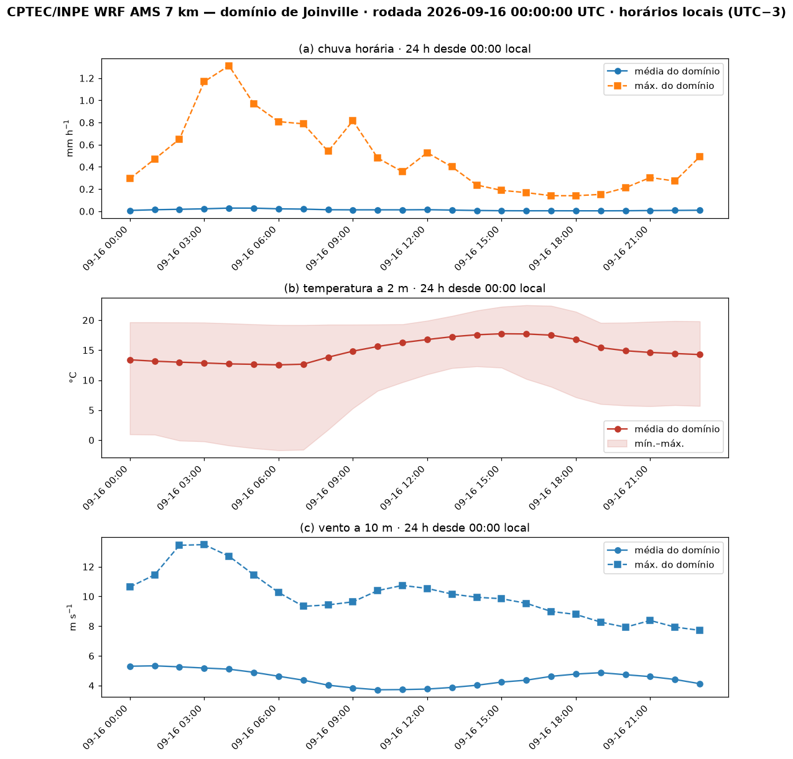
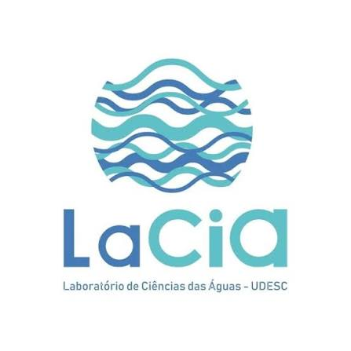

Relevo e chuva (controle orográfico). Joinville fica no sopé da Serra do Mar. Ventos úmidos de leste/nordeste vindos do Atlântico são forçados a subir a escarpa, resfriam e condensam — realçando a chuva sobre as encostas a oeste/noroeste da cidade (Mello, 2020; Rodrigues, 2015). Por isso, no mapa regional, as células de chuva mais intensas com frequência se concentram sobre a Serra, a oeste, e não sobre a planície onde está a cidade: um evento pode “chover na serra” e deixar as bacias urbanas quase secas — exatamente o que a agregação por bacia mostra quando os totais locais são baixos.
Contraste térmico mar–continente–relevo. A temperatura a 2 m exibe um gradiente característico: o oceano e a orla, de maior inércia térmica, permanecem amenos; o interior elevado da Serra é mais frio; e a superfície continental aquece e resfria mais no ciclo diário. No mapa, isso aparece como faixas mais quentes a leste (costa/oceano) e mais frias a oeste (altitude), com aquecimento ao longo da manhã.
Vento. O vento a 10 m responde ao gradiente de pressão de grande escala e é canalizado e desviado pelo relevo; brisas marítima e terrestre modulam o ciclo diário junto à costa. As setas indicam a direção para onde o vento sopra; a cor, a velocidade.
Escala e leitura. O WRF do CPTEC tem resolução de ~7 km: cada “retalho” do mapa é a média do modelo naquela célula. Isso resolve bem os padrões regionais (serra × costa), mas é mais grosseiro que um bairro — por isso vários bairros dentro de uma mesma célula recebem o mesmo valor previsto. É a saída direta do modelo, sem correção de viés; use-a como orientação de padrão e tendência, confirmada pelas estações observadas nas demais páginas.
O que é “OMM” e quais são os “limiares”. OMM = Organização Meteorológica Mundial — a agência das Nações Unidas para meteorologia, clima e água (em inglês, WMO). Os limiares citados no alerta são as classes de intensidade de chuva, definidas pela taxa horária (mm por hora) segundo a convenção meteorológica de precipitação: leve < 2,5 mm/h · moderada 2,5–10 mm/h · forte 10–50 mm/h · violenta ≥ 50 mm/h. O alerta de risco acende a partir de forte (≥ 10 mm/h). São taxas instantâneas (o quanto choveria numa hora naquele ritmo), não o total acumulado do dia — a mesma escala detalhada na página Sobre.
Dashboard gerenciado pelo projeto de pesquisa do Laboratório de Ciência das Águas (LaCiA) · PPGEC · UDESC — CCT, Joinville
